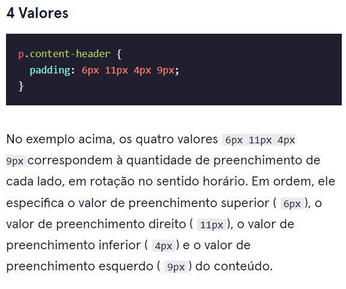
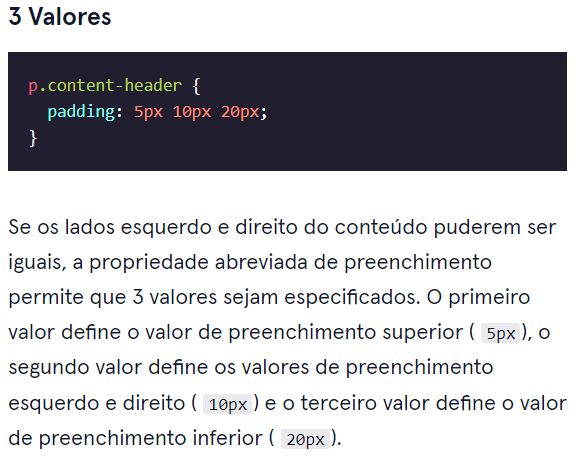
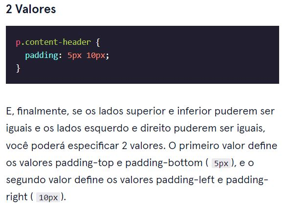

O modelo da caixa
O modelo de caixa compreende o conjunto de propriedades que definem partes de um elemento que ocupam espaço em uma página web. O modelo inclui o tamanho da área de conteúdo ( largura e altura ) e o preenchimento, borda e margem do elemento.As propriedades incluem:
- width e height: A largura e a altura da área de conteúdo.
- padding: A quantidade de espaço entre a área de conteúdo e a borda.
- border: a espessura e o estilo da borda ao redor da área de conteúdo e do preenchimento.
- margin: A quantidade de espaço entre a borda e a borda externa do elemento.
Uma borda é uma linha que envolve um elemento, como uma moldura em torno de uma pintura. As bordas podem ser definidas com um específico width, stylee color:
- width—A espessura da borda. A espessura de uma borda pode ser definida em pixels ou com uma das seguintes palavras-chave: thin, medium, ou thick.
- style—O desenho da fronteira. Os navegadores da Web podem renderizar qualquer um dos 10 estilos diferentes . Alguns desses estilos incluem: none, dotted, e solid.
- color—A cor da borda. Os navegadores da Web podem renderizar cores usando alguns formatos diferentes, incluindo 140 palavras-chave de cores incorporadas .
O espaço entre o conteúdo de uma caixa e as bordas de uma caixa é conhecido como preenchimento. O preenchimento é como o espaço entre uma imagem e o quadro que a cerca. Em CSS, você pode modificar este espaço com a padding propriedade.
- padding-top
- padding-right
- padding-bottom
- padding-left
Outra implementação da paddingpropriedade permite especificar exatamente quanto preenchimento deve haver em cada lado do conteúdo em uma única declaração. Uma declaração que usa várias propriedades como valores é conhecida como propriedade abreviada .
A abreviação de preenchimento permite especificar todas as padding propriedades como valores em uma única linha:
- padding-top
- padding-right
- padding-bottom
- padding-left
- 
- 
- 
Margem refere-se ao espaço diretamente fora da caixa. A margin propriedade é usada para especificar o tamanho desse espaço.
Se você quiser ser ainda mais específico sobre a quantidade de margem em cada lado de uma caixa, você pode usar as seguintes propriedades:
- margin-top
- margin-right
- margin-bottom
- margin-left
A sintaxe abreviada é a mesma do preenchimento
- O modelo de caixa compreende um conjunto de propriedades usadas para criar espaço ao redor e entre os elementos HTML.
- A altura e a largura de uma área de conteúdo podem ser definidas em pixels ou porcentagens.
- As bordas cercam a área de conteúdo e o preenchimento de um elemento. A cor, o estilo e a espessura de uma borda podem ser definidos com propriedades CSS.
- O preenchimento é o espaço entre a área de conteúdo e a borda. Pode ser definido em pixels ou porcentagem.
- Margem é a quantidade de espaçamento fora da borda de um elemento.
- As margens horizontais são adicionadas, de modo que o espaço total entre as bordas dos elementos adjacentes é igual à soma da margem direita de um elemento e da margem esquerda do elemento adjacente.
- As margens verticais são recolhidas, de modo que o espaço entre os elementos adjacentes verticalmente é igual à margem maior.
- margin: 0 autocentraliza horizontalmente um elemento dentro de sua área de conteúdo pai, se tiver uma largura.
- A overflow propriedade pode ser definida como display, hide, ou scroll, e determina como o HTML renderizará o conteúdo que ultrapassa a área de conteúdo de seu pai.
- A visibility propriedade pode ocultar ou mostrar elementos.
- hidden - oculta um elemento
- visible - exibe um elemento
- collapse - recolhe um elemento
Modelo de caixa!
- No modelo de caixa padrão, as dimensões da caixa são afetadas pela espessura e preenchimento da borda.
- A box-sizing propriedade controla o modelo de caixa usado pelo navegador.
- O valor padrão da box-sizing propriedade é content-box.
- O valor para o novo modelo de caixa é border-box.
- O border-box modelo não é afetado pela espessura ou preenchimento da borda.